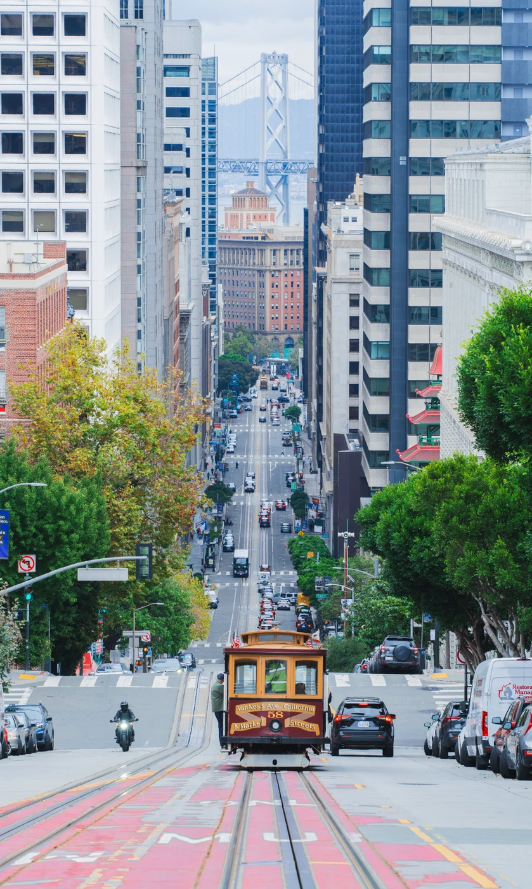
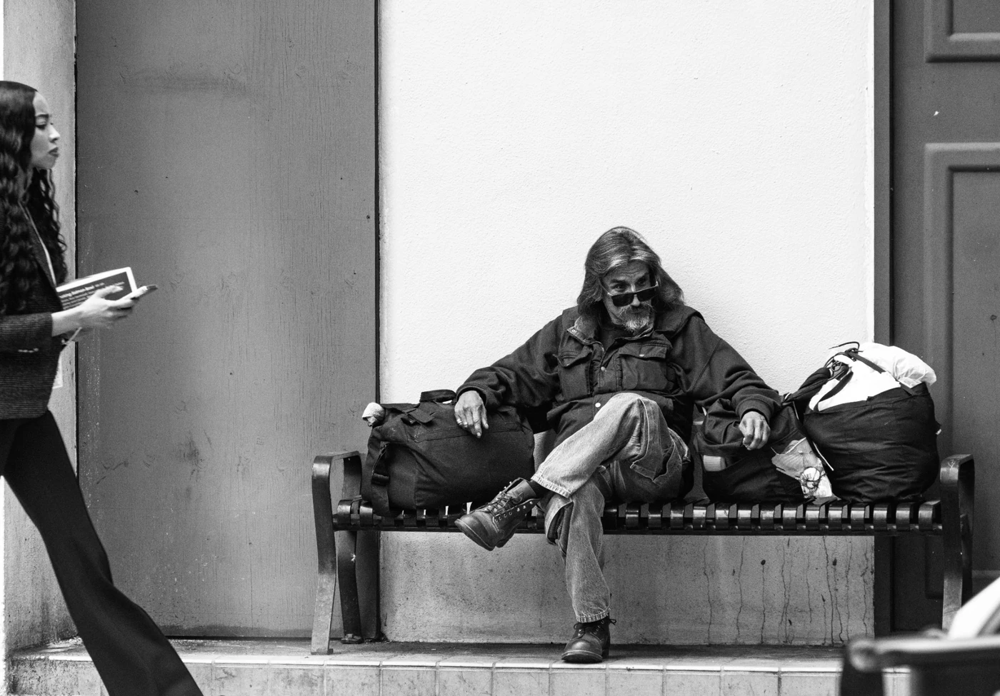
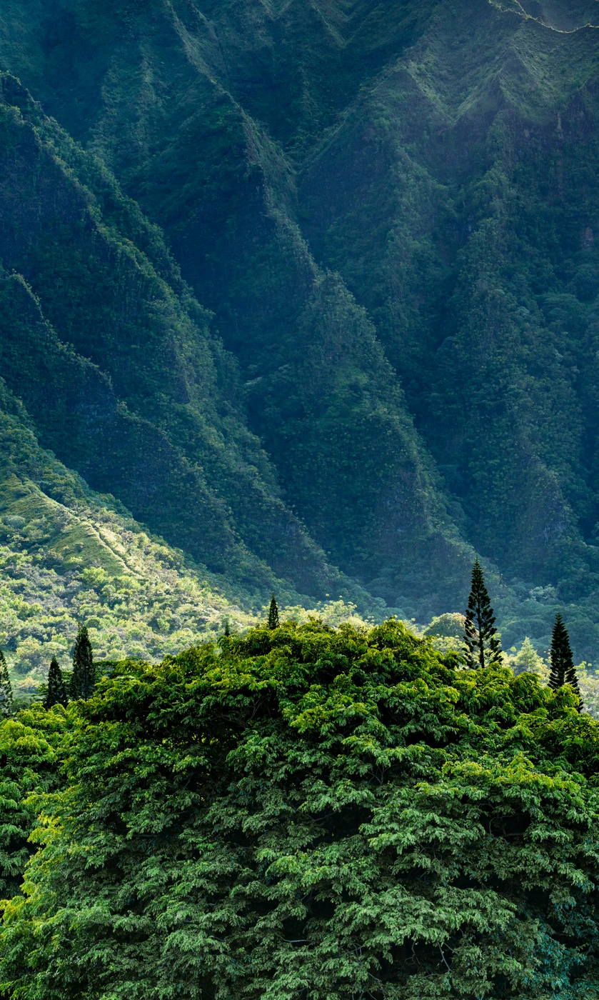
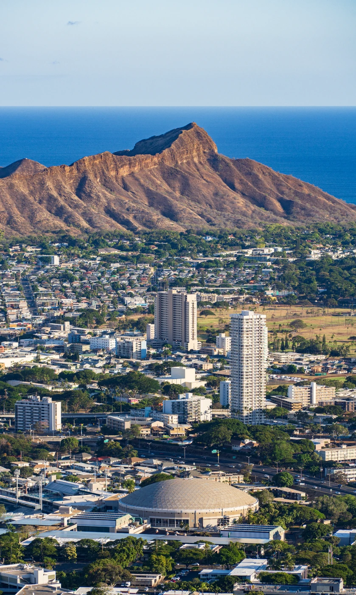
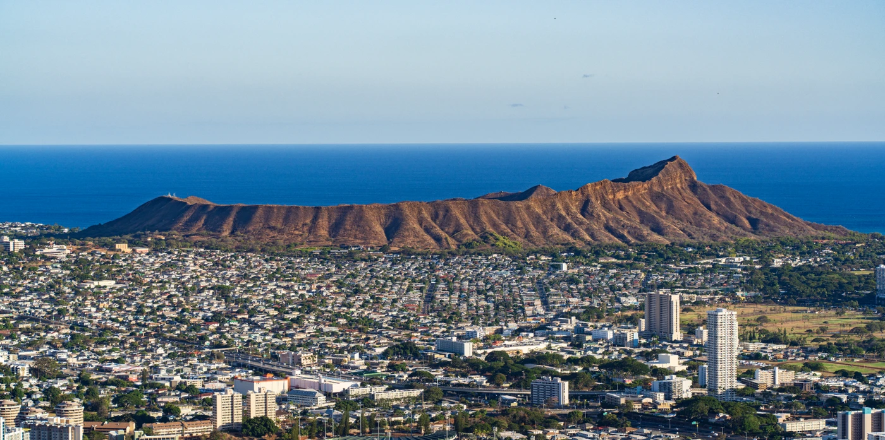
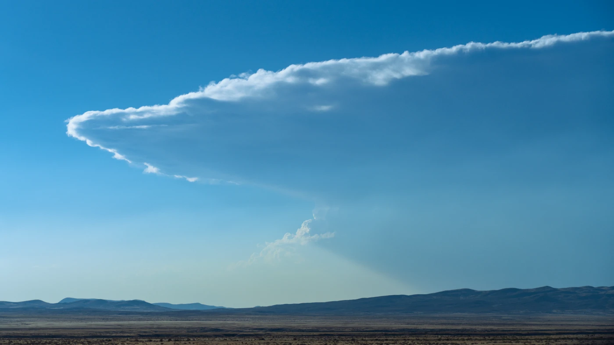
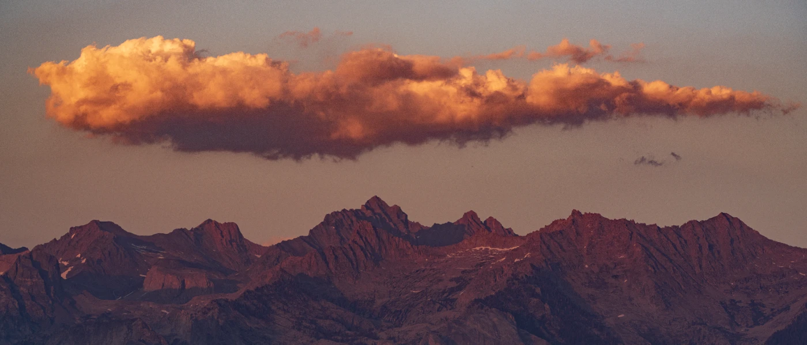

Photography
Selected photographs
A curated selection from the full photo library.
















Photographs by Jipeng Li.
Get in touch ↗Photography
A curated selection from the full photo library.







Photographs by Jipeng Li.
Get in touch ↗